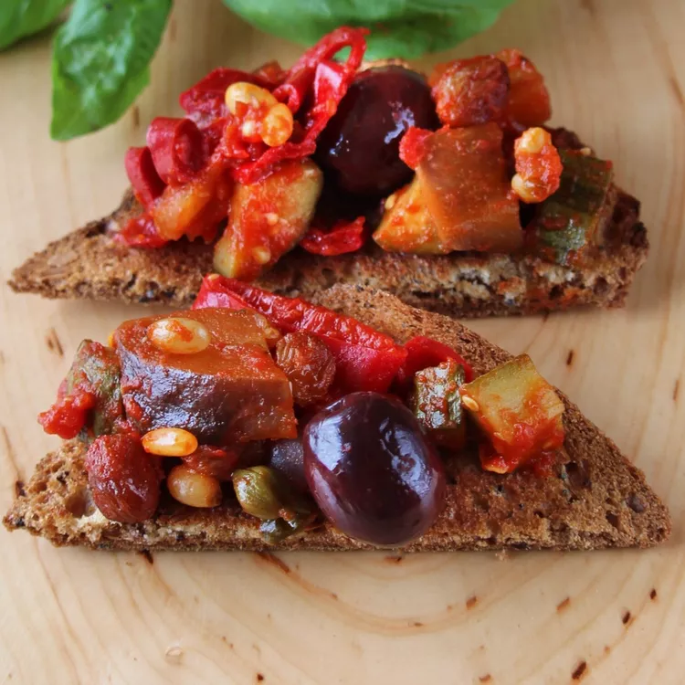

Easy Caponata

Description
Caponata is a traditional Sicilian dish with vegetables cooked in oil and vinegar. Flavoured with many mediterranean ingredients, it's tangy, sweet and crunchy. You'll fall in love with it!
Ingredients
- Celery
- Onion
- Eggplant
- Red bell peppers
- Zucchini
- Tomato puree
- Olives
- White Vinegar
- Sugar
- Raisins
- Pine nuts
- Capers
Steps
- Bring water to a boil. Add celery and cook until softned. Drain.
- Heat oil in a large pain and add onion and celery and cook for 5 minutes.
- Add eggplant, red bell peppers and zucchini and cook for 5 minutes.
- Stir in tomato puree, vinegar and sugar. Cook for about 15 minutes until the vegetables are tender.
- Add olives, raisins, pine nuts and capers. Season with salt and pepper.
- Cook for 5 minutes. Add chopped basil and serve at room temperature.